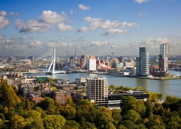

Rotterdam
 is een havenstad in het westen van Nederland, in de provincie Zuid-Holland. Met 588.490 inwoners (1 januari 2021)[1] is het de op een na grootste stad van Nederland qua inwoneraantal, na Amsterdam. De gehele gemeente Rotterdam telt 664.311 inwoners en de nog grotere metropoolregio Rotterdam Den Haag telt meer dan 2,4 miljoen inwoners. Rotterdam dankt zijn naam aan een dam in de rivier de Rotte. De stad ligt aan de rivier de Nieuwe Maas, die gevoed wordt door water van de Rijn. De haven van Rotterdam was lange tijd de grootste ter wereld en is nog altijd de grootste en belangrijkste van Europa. Het havengebied strekt zich uit over een lengte van 40 kilometer[2] en is een belangrijk logistiek en economisch centrum. Mede vanwege de havenindustrie heeft Rotterdam het imago van een arbeidersstad en kent de stad een zeer diverse bevolking.